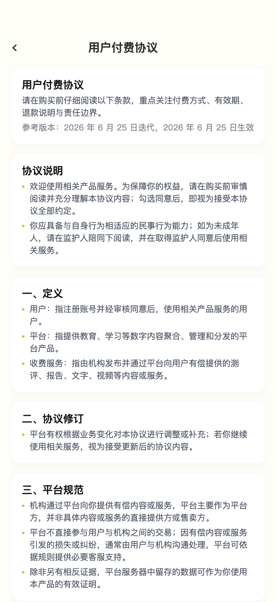
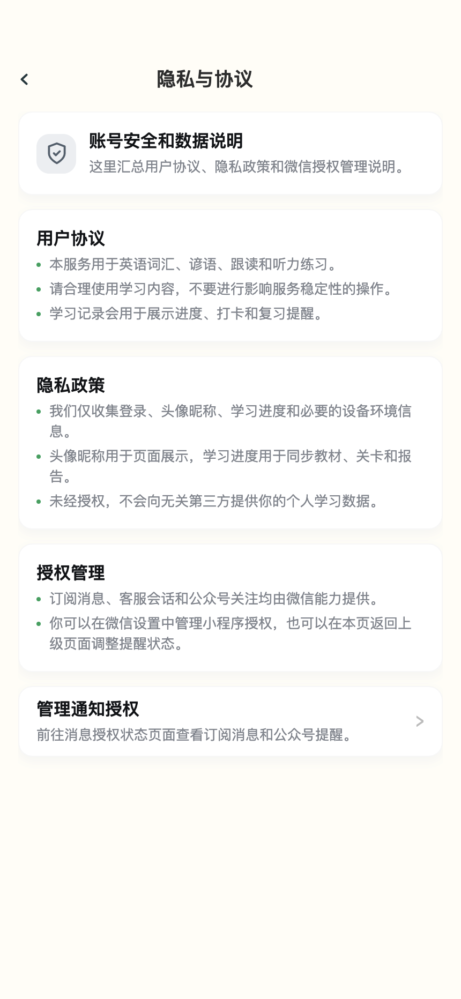

怎么使用这份测试用例
建议先看“软件层级”，再按功能域执行。每个功能域都有说明、入口、依赖和用例，方便新人快速理解业务。
npm run doc:screenshots。
软件层级是什么样子的
这款小程序可以理解为“微信运行时 + 小程序壳 + 功能页面 + 共享能力 + 后端/Mock 数据”的分层结构。测试问题也建议按这个层级归因。
app.json 路由、app.js 全局状态、自定义底栏、全局迷你播放器。
media、wave、弹窗、导航、图片资源、海报 Canvas、动画素材。
utils/mock、学习计划、会员、订阅、测评、学习记录等 slice。
核心业务口径
这一段给测试同学先对齐“怎么算”。页面能点通不代表业务正确，下面这些定义来自接口文档和关卡成绩规则，是验收时必须按同一口径判断的部分。
utils/mock/mock-store.js 的 __mock_state__；接后端后由接口 hydrate，不再依赖散落 Storage。
| 业务口径 | 定义给测试同学 | 数据/接口来源 | 必须测什么 |
|---|---|---|---|
| 订阅消息逻辑 | 订阅分两类：打卡提醒是累计型，用户可以多次订阅“囤次数”；支付成功通知和学习报告通知是事件型，业务发生时按偏好触发一次授权。关闭提醒偏好不清空已累计打卡次数。 |
pages/me/notify、utils/subscribe.js；后端目标为 subscribe-message/preferences 和 POST subscribe-message/report。Mock slice：subscribePrefs、subscribeQuota。
|
三类模板都展示；打卡提醒可“再订阅一次”；开关关闭后次数仍保留；订阅 accept 后累计次数增加；拒绝/系统不支持有提示；消息预览字段正确。 |
| 打卡逻辑 | 打卡不是打开日历就算。用户完成今日计划要求的关卡数后，当天自动点亮。今日目标来自学习计划；连续天数、礼品状态和规则文案来自用户信息/活动配置。 |
pages/checkin/calendar、pages/finish/today、utils/checkin-progress.js；后端目标为 user/info、study-plan、check-in、gift-claim。
|
单词/跟读完成不误记整关打卡；小测完成才算关卡完成；达到每日目标后日历点亮；切学习计划后今日目标同步；连续 30 天礼品状态分未达标/可领取/已领取。 |
| 学习计划逻辑 |
学习计划按 resBookId 绑定教材，保存每日目标关数。今日页的 x/y 关 中，y 是该教材每日目标，x 是今天已完成关数；如果用户降低计划，已完成关卡不会被删，所以 x 可以大于 y。
|
pages/plan/plan；Mock slice：studyPlans、dailyProgress；后端目标为 GET/POST /mini-app/study-plan。
|
每日组数调整后预计天数变化；保存后今日页提示“新的学习计划已生成”；切教材后不同教材读自己的计划；今日路线保留已完成关卡并补足后续未学关。 |
| 教材匹配逻辑 |
新手引导采集年级、学期、教材版本后，系统要按 version + gradeId + semesterId 匹配真实教材并设为默认词书。没有学期标签的书按上学期处理；无精确命中时退到同版本同年级任一册，再不行回退默认书，不能让今日页空着。
|
pages/onboarding/onboarding、utils/book-match.js、GET user-books；后端目标为 POST student-profile 返回 recommendedResBookId 并自动设默认词书。
|
选择不同年级/学期/版本后推荐教材正确；无 semesterId 的书按上学期匹配；无匹配时有兜底默认书；切换后今日页、成长页、学习计划都读同一本书。
|
| 会员门禁逻辑 |
当前产品是会员制，不是单本词书购买制。第 1 关永远免费；第 2 关起普通关卡、复习关、伴读内容需要 membership.active=true。注意区分进度锁 locked 和会员锁 lockedByVip。
|
utils/mock/level-lock.js、utils/level-access.js；后端建议在 book-units 下发 unlocked、requiresVip、lockedByVip。
|
非会员可完整体验第 1 关；非会员点第 2 关弹会员；会员开通后锁态刷新；复习关跟随会员；进度未达和会员未开两种提示不能混。 |
| 内容导入 / 题目生成逻辑 | 前端不负责出题。内容系统提供图书、单词、句子、标准音、汉语意思、词性、句子与单词关联；后端负责分关、生成选择题、听音填空、单词拼写、测评题和干扰项，前端只渲染题目、采集作答、上报耗时。 |
后端扩展 unit-words.exercises[] 或新增 unit-exercises；内容系统字段映射到小程序 Book / Word / Sentence。
|
关卡固定每 10 词切一关；按内容系统原始词序，不跨书混排；关卡显示名统一“关卡 N”；同一题干扰项不重复、不等于正确项；前端不临时拼题。 |
| 小测题目生成逻辑 | 关卡小测每词最多三步：听音填空、背诵评测、单词拼写。听音填空保留首字母，按词长挖 1-4 个空，优先挖元音且不挖相邻位；单词拼写抽掉一段字母，听标准音后选择正确字母段。 |
unit-words.exercises.fill / recite / wordSpell；常量包括 BLANK_RATIO=0.35、KEEP_FIRST=true。得分规则见小测 cell：背诵 40%、听填 30%、拼写 30%。
|
词太短时题型缺失要归一化；单空选完即判分；不能剧透答案；听音填空和拼写的同一词重练时题目结构稳定。 |
| 随机种子 / 可复现逻辑 |
题目打乱、挖空、抽样都要可复现。后端使用固定 seed，保证同一题在报告复查、重练、复习中结构一致，不会每次刷新答案位置和挖空位置都变。
|
选择题用 seed = 题ID；听音填空用 seed = word + levelId；测评组卷用 seed = examId / levelId。
|
退出重进同一道题，选项顺序和挖空位置一致；同一报告复查和原答题题目一致；换书/换关后 seed 不串。 |
| 测评组卷逻辑 | 入门测/结业测是词书维度，不是关卡小测。题目从全书素材抽样，单词模块约 70%、句子模块约 30%；有效题量低于最小值时，不进入答题，而显示“本书内容暂不足以生成测评”。 |
GET exam-paper?resBookId&type=entry|exit；提交走 exam-submit，报告走 exam-result。常量包括 EXAM_MIN_TOTAL=5。
|
entry 完成后不可重复重考，只能看上次报告；exit 未解锁时拦截；低题量是内容不足，不是网络错误；报告展示总分、模块、题型、错题和用时。 |
| 成绩与星级逻辑 | 关卡允许反复练。展示分用历史最高分，只升不降；最近一次成绩也要保存，但不能把历史高分刷低。星级 gate：低于 55 为 1 星且不解锁下一关，55-79 为 2 星可解锁，80 以上为 3 星可解锁。 |
save-learning-record、unit-report；规则见 docs/level-score-review-spec.md。报告字段包括 scoreRate、maxScoreRate、latestScoreRate、stars、unlockNext。
|
重练低分不降低展示分；重练高分刷新展示分；submittedAt 是最近提交时间，refreshedAt 是当前展示高分刷新时间；55 分边界和 80 分边界都要测。
|
| 时长上报逻辑 |
所有学习过程都要记真实用时，不能由前端按词数估算。单词新学、跟读、关卡小测、测评、随身听播放都要上报 durationSeconds，后端按用户、教材、日期、关卡汇总。
|
word-mark.durationSeconds、recitation-score.durationSeconds、listening-quiz-result.durationSeconds、save-learning-record.durationSeconds、exam-submit.durationSeconds、listen-duration。
|
暂停不计时；后台播放随身听仍计播放时长；中途退出不产生成绩但可有过程 log；学习记录的 minutes 来自后端汇总而非页面估算。
|
| 报告时间逻辑 |
报告不只展示分数，还要展示时间含义。submittedAt 是该环节最近一次成绩提交时间；refreshedAt 是历史最高展示分被刷新时间；reportGeneratedAt 是报告快照生成时间。
|
unit-report.sectionScores.*.submittedAt/refreshedAt、unit-report.reportGeneratedAt、exam-result.durationSeconds/reportGeneratedAt。
|
重练低分时 submittedAt 变化但 refreshedAt 不应刷新；重练高分时二者可同时刷新；测评报告的 reportGeneratedAt 应晚于或等于交卷时间。
|
| 随身听音频时长逻辑 |
随身听有两类统计：播放器听课文/单词的播放时长计入 audioMinutes；随身听里的课文跟读练习只计次数和用时，不计入跟读成绩、不进关卡报告、不进错词池。
|
POST listen-duration，source = player | follow-read；调用方包括 utils/player.js 和 pages/listen/listen.js。
|
播放暂停后只累计实际播放；切后台播放仍计；课文跟读不会改变 recitation-score 和 unit-report；学习记录里 audioMinutes 与 listenPracticeCount 分开展示。
|
| 手机号授权逻辑 |
引导页和我的页获取手机号都必须消费微信 getPhoneNumber 返回的动态 code，只调用 POST user/phone-number。不能回退到 user/info-update 伪保存手机号。
|
pages/onboarding/onboarding、pages/me/me、bindPhoneNumber；服务端消费微信换号接口并返回 phoneVerified。
|
用户取消授权、未同意隐私、接口 404、401、422、502、500 都要有明确提示；成功后我的页手机号脱敏展示，并刷新验证状态。 |
| 单词得分逻辑 | 单词分从“词 × 环节矩阵”算，不是简单平均。单词新学占 20%，跟读背诵占 30%，关卡小测占 50%。如果某词缺某个环节，权重按实际参与环节重新归一化，缺失环节不能当 0 分。 |
unit-report.words[].sections；小测来自 listening-quiz-result；跟读来自 recitation-score；新学来自 word-mark。
|
单词新学 2×2：认识+答对=100，认识+答错=30，不认识+答对=70，不认识+答错=50；跟读=单词读音 50% + 句子平均 50%；小测=背诵评测 40% + 听音填空 30% + 单词拼写 30%。 |
| 是否掌握单词 |
已掌握是成绩口径，不是“学过”。词掌握度 < 70 为待复习，≥ 70 为已掌握。这个 70 阈值独立于关卡星级的 55/80。
|
unit-report.masteredCount、unit-report.reviewCount、words[].mastery/status；规则常量 MASTERY_THRESHOLD = 70。
|
同一关可以“已学”但某些词未掌握；报告里的正确率、已掌握数、待复习数必须同源；掌握度 69/70 边界要测。 |
| 复习关逻辑 | 复习词来自首次正式提交时掌握度低于 70 的词，形成冻结种子；重练原关卡不改变复习种子。复习关至少 10 词，真错词不足时，从已掌握词里按掌握度从低到高补巩固词。 |
后端目标为 review-words；规则见 docs/level-score-review-spec.md §6.4。字段建议包含 source: wrong/consolidate。
|
中途退出不算首次；首次提交后重练不会改错词种子；真错词 ≥10 全用真错词；真错词 <10 补巩固词；巩固词不计入报告待复习数。 |
| 已学教材逻辑 | “已学教材”不是全量教材，也不是已购买教材。它是用户已经开始学习的教材子集，口径是首关三环节完成后，该书进入我的“已学书本”。弹窗教材选择是全量目录，二者不要混用。 |
pages/me/book、user-books、book-units.tasks[]；接口文档定义：选择教材弹窗=全量目录，me/book=已学子集。
|
新书未完成首关不应进入已学书本；完成首关三环节后出现；当前教材显示当前使用；点击继续学习回主学习链路。 |
| 已学 vs 已掌握 | 已学看流程：关卡三环节都做完，该关词数计入已学；与分数无关。已掌握看成绩：词掌握度 ≥70。两套数字不能互相替代。 |
已学：utils/learned-progress.js / learningWords；已掌握：unit-report.masteredCount。
|
一关低分完成后应计入已学，但报告里仍可能有待复习词；我的页/今日页“已学词数”和报告“已掌握词数”允许不同。 |
| 学习记录逻辑 |
学习记录按日期聚合真实耗时和学习动作，不是前端估算。练习、小测、测评、随身听播放全过程都要记 durationSeconds，后端汇总为分钟、词数、题数、随身听时长等。
|
GET /mini-app/study-records，字段包括 minutes、newWords、quizQuestions、audioMinutes、entryExamCount、exitExamCount。
|
今天/近 7 天/日历范围切换后汇总变化；无记录日期空态；点击可打开报告的明细项；随身听时长和练习时长分别计入。 |
| 入门测提示逻辑 | 入门测提示按书走。当前默认教材无 entry 成绩，并且这本书今天没弹过，才弹；每本书每天最多弹一次。成绩存在后永久不弹。 |
exam-result?type=entry、entryExamPrompts slice；后端目标为 POST /mini-app/entry-exam-prompt。
|
同一本书当天只弹一次；切换到另一本文档无成绩的书可弹；完成入门测后不再弹；稍后再说不影响当天频控。 |
截图索引
截图用于帮助测试同学对照页面状态。若截图和实机不一致，以当前代码运行结果为准，并更新截图。
| 功能域 | 截图文件 | 页面/状态 |
|---|---|---|
| 新手引导 | 07-onboarding.png | pages/onboarding/onboarding |
| 今日路线 | 07-today-route.png | pages/today/today |
| 成长 | 01-home-level-list.png / 01-home-map.png | 关卡列表 / 地图视图 |
| 教材选择 | 01-home-book-picker.png | 教材弹窗 |
| 练习 | 05-practice-word.png / 05-practice-recite.png | 单词新学 / 跟读背诵 |
| 伴读 | 03-listen-player.png / 03-listen-quiz.png | 随身听 / 关卡小测 |
| 打卡计划 | 02-checkin-calendar.png / 02-checkin-rules.png / 02-checkin-gift.png / 02-checkin-share.png / 06-plan.png | 打卡日历 / 规则弹窗 / 礼品弹窗 / 分享海报 / 学习计划 |
| 完成与报告 | 06-finish-word.png / 07-unit-report.png / 07-study-record.png | 完成页 / 关卡报告 / 学习记录 |
| 会员 | 07-membership.png / 07-membership-success.png / 07-membership-records.png | 会员开通 / 开通成功 / 购买记录 |
| 我的 | 04-me-profile.png / 04-me-book.png / 04-me-notify.png / 04-me-notify-preview.png / 04-me-contact.png / 04-me-privacy.png / 04-me-paid-agreement.png | 我的主页 / 已学教材 / 消息授权 / 消息预览 / 联系客服 / 隐私协议 / 付费协议 |
| 测评 | 07-exam-entry.png / 07-exam-report.png | 入门测 / 测评报告 |
{kind=link}
{kind=link}
{kind=link}
{kind=link}
{kind=link}
{kind=link}
{kind=link}
{kind=link}
二级页面矩阵
这些不是主 Tab，但都是测试容易漏的页面。二级页面主要承担“资料管理、协议说明、订单记录、消息授权、弹窗状态、学习记录明细”等支撑能力。
| 二级页面/状态 | 从哪里进入 | 这个功能是干嘛的 | 重点测什么 | 截图 |
|---|---|---|---|---|
已学教材pages/me/book | 我的 → 已学书本 | 展示已开始学习或可继续学习的教材，用于回到当前教材主链路。 | 空态、当前教材标识、继续学习、切换教材。 | 04-me-book.png |
消息授权状态pages/me/notify | 我的 → 消息授权；隐私/客服页也可跳转 | 管理打卡提醒、支付成功通知、报告提醒等订阅偏好。 | 模板卡片、累计次数、开关、订阅成功/拒绝、微信授权设置。 | 04-me-notify.png |
消息样式预览pages/me/notify | 消息授权状态 → 点击模板卡片 | 让测试和用户看到订阅消息实际字段长什么样。 | 弹窗遮罩、字段文案、关闭、不同模板内容。 | 04-me-notify-preview.png |
联系客服pages/me/contact | 我的 → 联系客服 | 学习记录、教材切换、订阅提醒和订单问题的客服入口。 | 微信客服按钮、FAQ 展示、消息授权快捷入口。 | 04-me-contact.png |
隐私与协议pages/me/privacy | 我的 → 隐私与协议 | 说明账号数据、学习记录、微信授权等隐私规则。 | 文案完整、滚动不遮挡、跳转消息授权。 | 04-me-privacy.png |
用户付费协议pages/me/paid-agreement | 会员页协议链接；我的协议入口 | 购买前必须可读的付费条款，覆盖有效期、退款、责任边界。 | 协议链接、长文滚动、生效日期、返回会员页。 | 04-me-paid-agreement.png |
关注公众号 web-viewpages/me/web-src | 我的 → 公众号/文章入口 | 承载公众号文章或运营内容链接，页面内容由 URL 参数和微信 web-view 合法域名决定。 | URL 编解码、标题设置、合法域名、空 URL 空态、返回路径。 | 动态 web-view，按链接实测 |
| 打卡规则弹窗 | 打卡日历 → 右上角帮助 | 解释打卡如何点亮、计划如何影响目标、连续 30 天奖励规则。 | 弹窗内容、遮罩关闭、按钮关闭。 | 02-checkin-rules.png |
| 打卡礼品弹窗 | 打卡日历 → 礼品图标 | 展示连续打卡奖励进度、领取或复制兑换码。 | 未达标/可领取/已领取三种状态、复制码、重复领取拦截。 | 02-checkin-gift.png |
| 打卡分享海报 | 打卡日历 → 分享打卡 | 生成今日或累计打卡海报，用于保存图片或分享到微信。 | 今日/累计切换、主题滑动、保存相册权限、分享按钮。 | 02-checkin-share.png |
会员开通成功pages/membership-success/membership-success | 会员页支付/兑换成功后 | 展示已解锁权益、套餐、有效期、订单编号，并引导返回学习。 | 订单信息、权益列表、查看购买记录、返回今日。 | 07-membership-success.png |
会员购买记录pages/membership-records/membership-records | 会员页/成功页 → 查看购买记录 | 保存会员订单历史，方便查套餐、开通方式、有效期和订单号。 | 空态/非空、会员徽章、订单复制、兑换码订单。 | 07-membership-records.png |
学习记录pages/study-record/record | 我的 → 学习记录 | 按日期查看学习分钟、单词、背诵、小测、随身听等历史数据。 | 日期范围、汇总卡、趋势条、每天记录、无记录空态、报告入口。 | 07-study-record.png |

消息样式预览
测试订阅消息字段、弹窗关闭和模板切换。

打卡分享海报
覆盖今日/累计海报、保存图片和微信分享。

会员开通成功
购买/兑换后的权益、订单和返回学习闭环。

会员购买记录
订单历史、会员状态、订单号复制。

用户付费协议
购买前必须可读、可返回、文案完整。

学习记录
按日与周期汇总学习数据，是报告体系的历史入口。
新手引导
这个功能用于新用户首次进入时建立学习档案：让系统知道孩子的学段、年级、学期、教材版本和学习形象，从而推荐默认教材并进入今日学习路线。
页面功能层：首访入口；依赖微信授权和数据服务层的学生档案。
pages/onboarding/onboarding → pages/today/today
必填校验、步骤切换、档案保存、手机号可跳过/可授权、推荐教材正确。
低版本微信、手机号授权失败、接口失败、返回后选择项保留。

| 优先级 | ID | 测试点 | 操作 | 预期 |
|---|---|---|---|---|
| P0 | ONB-001 | 完成首访建档 | 冷启动未登录/登录过期状态进入，完成 login 后依次选择年级、学期、教材、形象，手机号跳过或授权，点击完成。 | 登录态建立；档案保存成功并进入今日页；默认教材与档案匹配。 |
| P0 | ONB-002 | 必填项校验 | 不选择年级/学期/教材/形象直接下一步或完成。 | 出现对应 toast，停留当前步骤，已选内容不丢失。 |
| P1 | ONB-003 | 编辑档案回流 | 从今日或我的进入 ?edit=1，修改教材/形象后完成。 | 回到原主链路，今日/成长教材刷新。 |
今日与成长
今日页负责告诉学生“今天学什么”，成长页负责展示整本教材的关卡进度。两者是主学习入口，共同承载教材切换、任务入口、报告入口、锁关和会员引导。
应用壳层 Tab 页 + 页面功能层；依赖教材、关卡、会员、学习计划、测评结果等数据。
pages/today/today、pages/home/home、pages/me/book
今日任务、列表/地图视图、三环节入口、报告 pill、教材弹窗、入门测提示。
第 1 关免费；进度锁看前序完成；会员锁看 membership.active。

| 优先级 | ID | 测试点 | 操作 | 预期 |
|---|---|---|---|---|
| P0 | TOD-001 | 今日任务进入练习 | 打开今日页，点击待练关卡的单词新学、跟读背诵、关卡小测。 | 分别进入对应页面，参数包含教材和关卡信息。 |
| P0 | GRW-001 | 成长列表三环节入口 | 在成长列表点击三类任务。 | 单词进入 practice word，跟读进入 practice recitation，小测进入 listen quiz。 |
| P0 | GRW-002 | 地图视图锁态 | 切到地图视图，点击已完成、待练、会员锁、进度锁关卡。 | 状态展示和跳转/提示符合锁态规则。 |
| P1 | GRW-003 | 教材切换 | 打开教材弹窗，切换学段、版本、教材并点击使用，触发 switch-default-book。 | 列表过滤正确；默认教材保存成功；切换后今日/成长/计划/报告入口同步刷新。 |
| P1 | TOD-002 | 入门测提示频控 | 新教材无入门测成绩进入今日，点击稍后再说，再次进入。 | 首次提示；稍后再说后按频控不重复打扰；开始入门测跳转正确。 |
单词新学 / 跟读背诵
这是每关学习闭环的前两步。单词新学解决“认不认识、会不会选义、能否理解例句”；跟读背诵解决“能不能开口读、发音是否过关”。
页面功能层 + 组件层；依赖 media 录音组件、音频资源、驰声评分能力。
pages/practice/practice?taskType=word / taskType=recitation
认识/不认识分支、选择题、详情 Tab、例句音频、录音授权、评分结果、完成跳转。
单词、音标、发音、释义、句子、详情字段、答题和跟读结果。

| 优先级 | ID | 测试点 | 操作 | 预期 |
|---|---|---|---|---|
| P0 | PRC-001 | 认识分支 | 点击发音，点认识，完成选择题并进入详情/下一词。 | 音频可播；选择题正误反馈正确；进度推进。 |
| P0 | PRC-002 | 不认识分支 | 点击不认识，查看详情 Tab 后继续。 | 详情字段完整渲染；空字段无异常占位；可继续下一词。 |
| P0 | REC-001 | 跟读评分 | 播放标准音，点击录音，结束录音。 | 播放期间全局播放器暂停；波形显示；评分完成后有分数/反馈。 |
| P0 | REC-002 | 麦克风授权 | 在未授权/已拒绝状态点击录音。 | 出现用途说明或去设置弹窗；授权后可录音；拒绝不崩溃。 |
| P1 | PRC-003 | 音频失败兜底 | 模拟发音/例句音频不可用。 | 出现 toast 或错误状态，不阻塞继续学习。 |
随身听 / 关卡小测
随身听用于碎片时间反复听单词和例句；关卡小测是每关的验收环节，覆盖听音填空、背诵评测和单词拼写。
Tab 伴读/二级页 + 全局播放器 + 录音组件 + 小测状态机。
pages/listen/listen、custom-tab-bar、components/listen-player
播放控制、播放列表、倍速/循环、跨页迷你播放条、小测三阶段、倒计时。
小测背诵同样依赖麦克风授权；保存分数依赖结果上报。

| 优先级 | ID | 测试点 | 操作 | 预期 |
|---|---|---|---|---|
| P0 | LIS-001 | 播放器控制 | 点击播放/暂停、上一首/下一首、倍速、循环、进度拖动、播放列表。 | 播放状态、标题、进度、倍速、循环态正确更新。 |
| P0 | QUI-001 | 听音填空 | 播放音频，点空格，选择候选词，清空并重新作答。 | 填空顺序和正误判断正确；倒计时可暂停/跳过。 |
| P0 | QUI-002 | 背诵评测 | 进入背诵阶段，听标准音并录音评分。 | 分数写入当前题记录；完成后进入拼写或下一题。 |
| P0 | QUI-003 | 单词拼写 | 播放单词音频，选择字母块。 | 单空选完即判分；正确/错误态明显；可提交报告。 |
| P1 | LIS-002 | 跨页迷你播放器 | 随身听播放中切换今日、成长、我的。 | 底栏迷你播放条保持；练习录音时播放器暂停。 |
关卡小测三环节出题规则
这一块专门给测试同学看“小测题到底怎么来”。关卡小测不是前端临时凑题，目标口径是后端按规则下发 exercises.listenFill / recite / wordSpell，前端只负责渲染、作答、录音和上报。
| 题型 | 出题规则 | 判分/上报 | 重点测什么 |
|---|---|---|---|
| 整体题量与顺序 | 本关 unit-words 返回的每个单词都要参与小测，不抽样。每词最多 3 步，页面顺序固定为：听音填空 → 背诵评测 → 单词拼写。词序可由后端用 seed=levelId 打乱并保持可复现；未下发打乱时按接口返回顺序。 |
每个词形成一个小测 cell；最终通过 listening-quiz-result 上报每题结果、阶段 phase 和 durationSeconds。 |
同一关退出重进题序稳定；每个词都出现；三步顺序不乱；重练/报告复查题目结构一致。 |
| ① 听音填空 | 播放单词标准音，展示释义提示，对单词本身挖字母空。首字母保留；按词长挖 1-4 个空：L≤3 挖 1，L=4-6 挖 2，L=7-9 挖 3，L≥10 挖 4；优先挖元音，元音不足再挖辅音；不挖相邻位，重复字母不全挖。备选字母块 = 正确字母 + 2-4 个干扰字母，并打乱。 | 整词填对 = 100；填错 = 0；多空时可按填对空数 / 总空数 × 100。小测内权重 30%。 | 首字母必须保留；空位数量符合词长；不会连续挖空；选项不剧透答案；多空填错部分时分数按比例；无 audioUrl 或无合法挖空时可跳过该步。 |
| ② 背诵评测 | 显示中文释义，让用户脱稿朗读目标单词；不展示英文拼写作为提示。以单词标准音作为评分目标，走语音评测能力。 | 评分结果为 0-100；小测内权重 40%。需要记录录音/等待评分耗时，并归入 durationSeconds。 |
麦克风授权、录音中断、评分失败、重录；评分写入当前词而不是串到下一词；背诵评测和 practice 的跟读背诵是两个技能，不要互相覆盖成绩。 |
| ③ 单词拼写 | 播放单词标准音，单词只挖掉一整段连续字母，展示 prefix + 空 + suffix。底部选项为 4 个等长字母段：1 个正确段 + 3 个干扰段，并打乱。区别于听音填空，这里只有一个空，选完立即判分。 |
选对 = 100；选错 = 0；不设撤回，不给提示剧透。小测内权重 30%。 | 词长 < 3 时跳过拼写；选项不能重复，不能只有正确项；选错后不能改答案刷分；音频缺失时拼写步降级或跳过。 |
| 缺题归一化 | 如果某个词因为音频、词长、后端未下发等原因只做了 1-2 个小题，只按实际参与的小题重新分配 0.4 / 0.3 / 0.3 的权重。 | 缺失小题不能当 0 分。例如只做听填 + 背诵时，有效权重约为听填 43%、背诵 57%；只做背诵时，背诵占 100%。 | 短词、无音频、无 listenFill、无 wordSpell 都要测；报告里的小测分不能因为跳过题型被错误拉低。 |
| 分数进报告 | 关卡小测 cell 再进入单词掌握度矩阵：单词新学 20%、跟读背诵 30%、关卡小测 50%。 | 小测内为背诵 40% + 听填 30% + 拼写 30%；词掌握度 ≥70 才算已掌握。 | 同一词小测低分会拉低掌握度；关卡完成不等于全部词已掌握；小测完成后才算整关通关/打卡。 |
完成页 / 报告 / 学习记录
完成页给学生即时正反馈，报告给家长和学生看学习结果，学习记录按日期沉淀历史表现。它们共同负责“学完以后看得见”。
页面功能层 + 数据服务层；报告依赖学习结果、耗时、掌握度、错词。
pages/finish/today、pages/report/report、pages/study-record/record
三环节完成口径、打卡口径、报告规则弹窗、待复习词、日历记录。
只有关卡小测完成后才算通关/打卡；单词和跟读只算环节完成。

| 优先级 | ID | 测试点 | 操作 | 预期 |
|---|---|---|---|---|
| P0 | FIN-001 | 环节完成口径 | 分别用 word、recitation、listening 进入完成页。 | 单词/跟读不误记整关打卡；小测完成后计入今日完成。 |
| P0 | RPT-001 | 关卡报告 | 从今日/成长报告入口进入。 | 正确率、已掌握、待复习、耗时、环节得分显示正确。 |
| P1 | RPT-002 | 规则弹窗 | 点击报告页两个问号。 | 规则内容正确，遮罩和“知道啦”均能关闭。 |
| P0 | REC-LOG-001 | 学习记录 | 切换预设日期，展开日历和某日记录，进入详情报告。 | 统计头、日列表、环节详情一致；无记录日期显示空态。 |
| P1 | REC-LOG-002 | 周期汇总口径 | 切换今天、近 7 天、自定义日期范围。 | 分钟数、单词数、小测题数、随身听时长随范围变化；顶部日期标签同步。 |
| P1 | REC-LOG-003 | 记录详情入口 | 点击每天记录中的可打开报告项。 | 能进入关卡报告或测评报告；无报告项不可误跳转。 |

环节完成
单词/跟读完成只推进环节，不误记整关通关。
关卡报告
正确率、掌握词、待复习、环节表现。
学习记录
按日期沉淀学习分钟、词数、小测和随身听数据。
打卡 / 学习计划
学习计划决定每天学几关，打卡负责把持续学习可视化，并通过提醒、礼品和分享海报增强坚持动力。
页面功能层 + 微信系统能力；打卡分享依赖 Canvas、相册权限和订阅消息。
pages/plan/plan、pages/checkin/calendar、pages/checkin/share-poster.js
每日关数、预计完成天数、月历、连续天数、提醒订阅、礼品、海报保存。
订阅消息拒绝、相册拒绝、海报生成失败都要有明确反馈。

| 优先级 | ID | 测试点 | 操作 | 预期 |
|---|---|---|---|---|
| P0 | PLN-001 | 保存计划 | 调整每日组数，点预设，展开关卡，保存。 | 预计天数和关卡预览实时更新；保存后今日页反馈计划已生成。 |
| P0 | CHK-001 | 打卡日历 | 切换月份，点击日期，打开规则。 | 日期状态、连续天数和规则文案正确。 |
| P0 | CHK-002 | 订阅提醒 | 点击开启打卡提醒，分别测试同意/拒绝/系统不支持。 | 成功累计次数；拒绝或不支持有 toast/弹窗反馈。 |
| P1 | CHK-003 | 分享海报 | 打开分享弹窗，切换今日/累计，保存图片。 | 数据口径正确；相册权限异常可恢复；海报生成失败有提示。 |
| P1 | CHK-004 | 礼品领取 | 未达标、达标、已领取三种状态打开礼品弹窗。 | 未达标提示继续打卡；达标可领取/复制；已领取不可重复。 |

学习计划
每日组数、预计天数和关卡预览。

打卡规则
解释完成计划、连续天数和奖励规则。

礼品弹窗
未达标、可领取、已领取状态验收。
分享功能专项
分享功能目前主要体现在打卡海报：用户完成学习后，可以生成“今日打卡”或“累计打卡”海报，保存到相册或分享到微信。它是学习激励闭环的一部分，不是简单的图片弹窗。
页面功能层 + 组件/资源层 + 微信运行层。页面在 pages/checkin/calendar，海报绘制在 pages/checkin/share-poster.js，保存依赖相册权限。
打卡日历页点击“分享打卡”；完成页进入打卡日历后也能分享。
把学习结果外化为可传播的海报，用连续天数、掌握数、学习时长强化坚持感。
海报生成、模式切换、主题滑动、保存相册、微信分享、权限拒绝和生成失败兜底。
| 优先级 | ID | 测试点 | 操作 | 预期 |
|---|---|---|---|---|
| P0 | SHR-001 | 打开分享弹窗 | 进入打卡日历，点击“分享打卡”。 | 弹出海报弹窗，背景遮罩正确，默认展示累计或当前选中模式。 |
| P0 | SHR-002 | 今日/累计数据口径 | 分别切换“今日打卡”和“累计打卡”。 | 今日模式显示今日学习数据；累计模式显示连续打卡、累计掌握等累计口径。 |
| P1 | SHR-003 | 主题滑动 | 左右滑动海报主题。 | 海报图、圆点指示和当前主题保持同步；不出现空白海报。 |
| P0 | SHR-004 | 保存图片 | 点击保存图片，分别测试相册已授权、未授权、拒绝授权。 | 已授权保存成功；未授权引导授权；拒绝后有明确提示，可重新去设置。 |
| P1 | SHR-005 | 分享到微信 | 点击分享到微信。 | 触发微信分享链路或给出平台限制提示；不关闭页面导致状态丢失。 |
| P1 | SHR-006 | 海报生成失败 | 模拟背景图/二维码/Canvas 失败。 | 显示“海报生成失败，请重试”等兜底，不阻塞关闭弹窗。 |
会员
会员功能负责解锁第 2 关起的完整教材关卡、随身听、报告复习等权益。它既是购买链路，也是学习门禁规则的来源。
页面功能层 + 数据服务层 + 微信支付/模拟支付；影响今日、成长、伴读的锁态。
pages/membership/membership、membership-success、membership-records
套餐选择、协议勾选、确认面板、兑换码、支付成功、订单记录、会员态刷新。
非会员第 1 关免费，其余关卡和复习关需要会员。

| 优先级 | ID | 测试点 | 操作 | 预期 |
|---|---|---|---|---|
| P0 | MEM-001 | 开通会员 | 选择套餐，不勾协议点击开通；再勾协议确认支付。 | 未勾协议 toast；确认面板金额正确；成功后跳转成功页并刷新会员态。 |
| P0 | MEM-002 | 兑换码 | 输入无效码和有效码，分别点击使用并确认。 | 无效码提示；有效码锁定对应套餐；成功生成订单。 |
| P1 | MEM-003 | 购买记录 | 进入购买记录，点击订单号复制。 | 订单号复制成功；空记录有空态图和引导。 |
| P1 | MEM-004 | 会员门禁回归 | 非会员点击第 1 关和第 2 关任务，会员后再点击。 | 第 1 关可体验；第 2 关非会员提示开通，会员可进入。 |
开通会员
套餐、权益、兑换码、付费协议和确认入口。
开通成功
权益解锁、订单信息、查看购买记录和返回今日。
购买记录
订单列表、开通方式、有效期和订单号复制。
我的
我的页是账号、资料、会员、消息授权、学习记录、已学书本和协议客服的入口。它的测试重点是资料授权和入口导航。
Tab 页 + 微信系统能力；依赖用户信息、手机号、头像上传、订阅偏好。
pages/me/me、book、notify、contact、privacy、paid-agreement
登录授权、昵称头像、手机号脱敏、学习形象、各菜单入口。
用户取消授权、手机号绑定失败、通知授权开关、客服 open-type。

| 优先级 | ID | 测试点 | 操作 | 预期 |
|---|---|---|---|---|
| P0 | ME-001 | 资料授权 | 点击头像/昵称授权，编辑昵称，选择头像并走 upload-avatar，绑定手机号。 | 头像上传成功后回显；资料保存成功；手机号脱敏展示；取消授权有提示。 |
| P0 | ME-002 | 入口导航 | 点击打卡统计、消息授权、公众号、学习记录、教材、协议、客服。 | 各入口跳转正确；客服按钮可触发微信客服。 |
| P1 | ME-003 | 消息授权页 | 进入 notify，预览模板，开启提醒，切换偏好，打开微信授权设置。 | 三类模板展示正确；订阅成功/拒绝/不支持均有反馈。 |
| P1 | ME-004 | 已学书本 | 进入已学书本，点击继续学习/切换教材。 | 列表只展示符合条件教材；继续学习回主链路。 |
| P1 | ME-005 | 联系客服 | 进入联系客服页，点击客服按钮和消息授权状态。 | 客服 open-type 可触发；消息授权快捷入口跳转正确。 |
| P1 | ME-006 | 隐私与协议 | 进入隐私与协议页，滚动阅读并点击管理通知授权。 | 文案完整无遮挡；管理通知授权跳转 notify。 |
| P0 | ME-007 | 付费协议入口 | 从会员页点击《用户付费协议》，从我的协议入口进入。 | 协议页可打开、可返回，购买前协议链路不断。 |

已学教材
教材回流、继续学习、当前教材状态。

消息授权状态
打卡提醒、支付通知、报告提醒的订阅管理。

联系客服
FAQ、客服按钮、消息授权快捷入口。

隐私与协议
账号数据、学习记录和授权说明。
用户付费协议
购买前必读条款、有效期和退款说明。
消息预览弹窗
模板字段和实际提醒样式验证。
入门测 / 结业测
测评功能用于在词书维度评估当前水平或学习成果，区别于关卡小测。入门测帮助定起点，结业测验证整本书学习效果。
页面功能层 + 数据服务层；依赖 exam paper、音频资源、答题结果和报告生成。
pages/exam/exam、pages/exam/exam-report
开始测评、题型作答、上一题、未答校验、交卷确认、报告分档。
试题不足、音频缺失、退出确认、报告数据缺失。

| 优先级 | ID | 测试点 | 操作 | 预期 |
|---|---|---|---|---|
| P0 | EXM-001 | 入门测答题 | 开始入门测，完成选择题/拼写题，上一题，交卷。 | 未答不能下一题；交卷二次确认；保存结果并进入报告。 |
| P0 | EXM-002 | 测评报告 | 交卷后查看报告。 | 总分、分档文案、模块表现、完成按钮正确。 |
| P1 | EXM-003 | 结业测锁态 | 未满足和满足结业测条件时分别点击结业测入口。 | 未满足显示锁定说明；满足后进入 type=exit 测评。 |
| P1 | EXM-004 | 退出确认 | 测评中点击返回。 | 弹出退出确认；取消留在测评；确认回学习页。 |
横向回归与发布前检查
以下问题跨多个功能，发布前建议统一检查。
| 类别 | 为什么要测 | 覆盖范围 | 预期 |
|---|---|---|---|
| 权限 | 微信权限很容易导致主链路卡住。 | 用户资料、手机号、麦克风、订阅、相册、客服。 | 同意、拒绝、不支持、去设置都有明确反馈。 |
| 登录态 | 首访、换设备、登录过期都会影响后续所有接口。 | login、用户信息拉取、档案保存、会员态、默认教材。 | 未登录可自动建态；过期后能重新登录；登录失败有重试/退出路径。 |
| 网络 | 接口和音频失败不能白屏或卡死。 | 用户信息、教材关卡、单词资源、音频、报告、订单。 | 显示加载失败/空态/重试/返回，页面不崩溃。 |
| 会员锁 | 锁态同时影响今日、成长、伴读和复习。 | 第 1 关免费、普通关、复习关、已购/会员有效期。 | 各入口锁态一致，不出现绕过或误锁。 |
| 音频录音 | 播放器、录音和小测共享媒体能力。 | 随身听、单词发音、例句音频、跟读、小测背诵。 | 互相暂停/恢复正确；录音中不混播；失败有兜底。 |
| 适配 | 自定义导航和底栏容易遮挡内容。 | iPhone SE、常规 iPhone、大屏 Android、长内容弹窗。 | 按钮、底栏、弹窗、安全区不遮挡，文字不溢出。 |
| 文案 | 对外销售页承诺要和产品内一致。 | “单词新学 → 跟读背诵 → 关卡小测 → 复习 → 报告”。 | 术语统一，不出现已下线“广告详情/VIP购买”等旧主流程文案。 |
node --test tests/*.test.js。